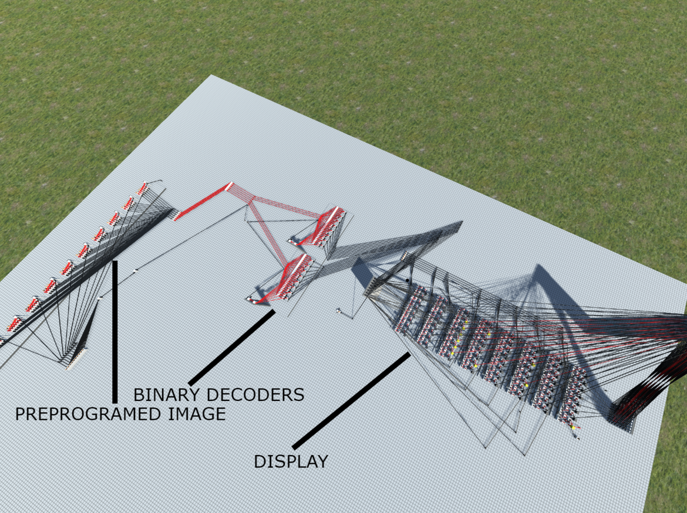
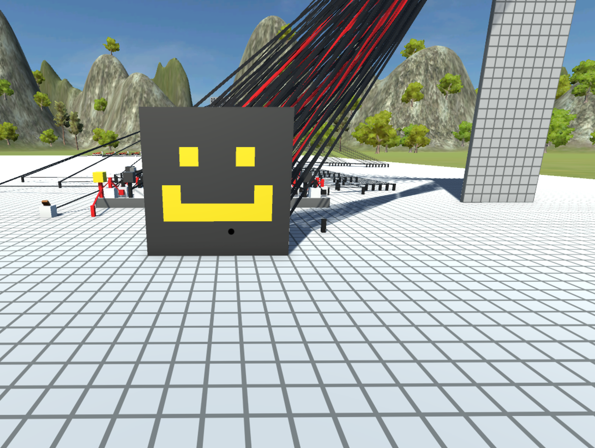
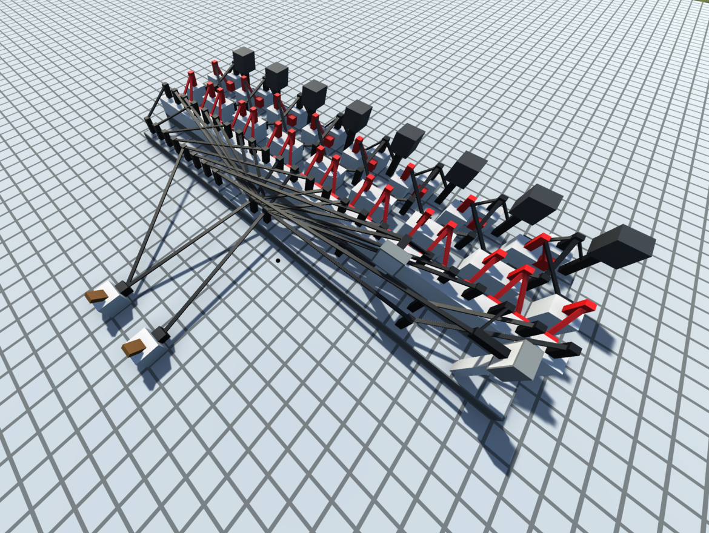
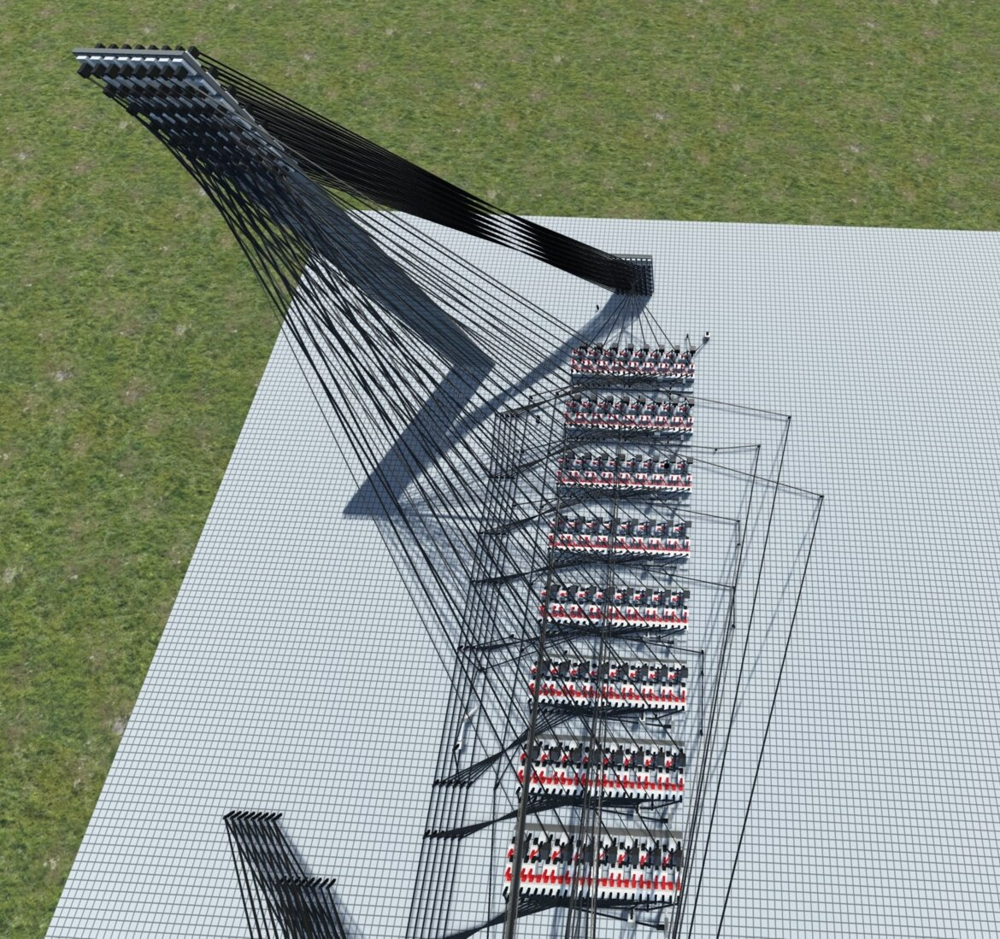
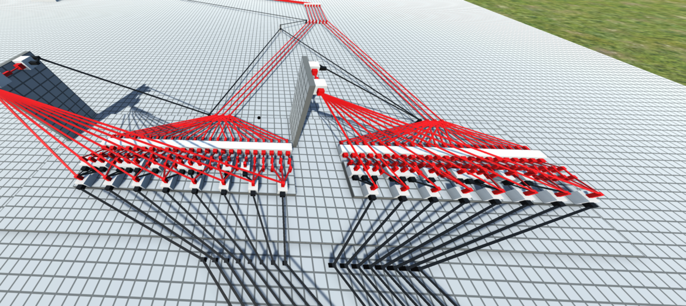
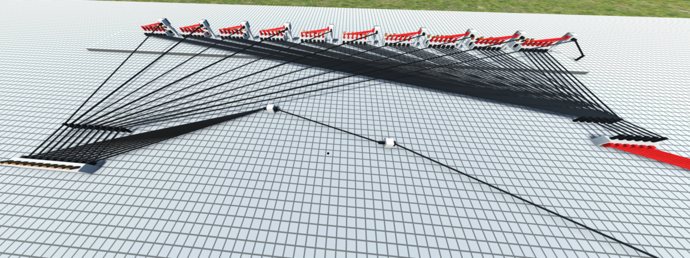

CONCEPT
This build consists of an 8x8 Display which is fed by two binary decoders. You can turn on any pixel with 6 bits of data. Three bits indicate the X of the pixel you desire and the next three indicate the Y of the pixel you desire. Although there is no support to directly turn off pixels through the bus, the 8-bit modules that make up the display technically support it and it would not be that difficult to implement. This is why the reset switch I have is possible. I also built a preprogrammed image to show the functionality of this display. There are 10 switches which each allow the 6-bit piece of data associated with it to be sent down the bus. When all switches are flipped the image you see below is produced.


HOW IT WORKS
The display is composed of eight 8-bit modules, as you can see below.


Each bit on this display needs to have two wires enabled for anything to happen:
Y Level Wire - This wire indicates that the pixel being accessed belongs in this Y level. Since the Y in this display is eight of these stacked, this essentially means that when this is on, every bit on this module has one enable wire on.
X Level Wire - This wire indicates the X level of the pixel being accessed. This is set up in a way so that when an X of 1 is indicated (which would be the first pin in the series of eight here), the first pin on all eight modules is enabled. This system is a good solution for accessing individual pixels; however, at this point, the data bus is 16 bits, and we can make that smaller and more convenient to use.

The next part of the process is these binary decoders that sit in front of the six-bit data bus. Since each pin previously correlated to an X and a Y, without these to indicate a specific pixel, you would need 16 bits of data, which is way too much for our needs, as 16 bits of data can hold about 32,000 combinations when we only need to hold 64 (one for each pixel). So here, essentially, what we are doing is taking in a 6-bit value where the first 3 bits represent X and the second 3 bits represent Y, and sending these to the decoders, which then convert that data into one of the 8 pins needed to interface with the display.

The final part that I added here is a preprogrammed image to show the functionality of this display. Basically, there are 10 switches. Each acts as an enable wire for a 6-bit piece of binary data that matches up with a pixel. Each switch also connects to the enable wire I have set up for the 6-bit bus. When each switch is flicked, you get the image you can see at the top of this article.